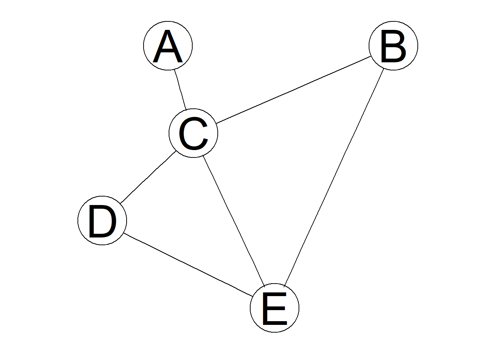

Chapter 6 Character string processing & Pattern matching
6.1 Character string processing & Pattern matching
6.1.1 Learning goals
- Character string manipulation : string concatenation,splitting, etc.
- Pattern matching and replacement
6.1.2 Quotes and escape characters (characters with special meaning)
\n newline \v vertical tab
\r carriage return \\ backslash \
\t tab \' ASCII apostrophe '
\b backspace \" ASCII quotation mark "
\a alert (bell) \` ASCII grave accent (backtick) `
\f form feed \\. dot (escaped twice ; special meaning in RE)6.1.3 Character string
Character string or simply character, as it is called in R, is a sequence of characters and a character vector is vector of character strings.
( cs <- "This is a character string" ) ## [1] "This is a character string"( cv <- c(cs, "and this is another !") )## [1] "This is a character string" "and this is another !"Single and double quotes can be used interchangeably, however, double quotes are preferred.
"string" ## [1] "string"'string' ## [1] "string""'strings'"## [1] "'strings'"'"string"' ## [1] "\"string\""Formatting the output with print and cat functions. The function print does more formatting than cat. On the other hand cat interprets escape characters such as whitespaces [\t\n\r,…], note that the behavior will differ depending on the platform. The function cat is useful and often used to print progress and/or debugging information in functions.
print(1:50)## [1] 1 2 3 4 5 6 7 8 9 10 11 12 13 14 15 16 17 18 19 20 21 22 23 24 25
## [26] 26 27 28 29 30 31 32 33 34 35 36 37 38 39 40 41 42 43 44 45 46 47 48 49 50cat(1:50)## 1 2 3 4 5 6 7 8 9 10 11 12 13 14 15 16 17 18 19 20 21 22 23 24 25 26 27 28 29 30 31 32 33 34 35 36 37 38 39 40 41 42 43 44 45 46 47 48 49 50print("separate\nlines")## [1] "separate\nlines"cat("separate\nlines") ## separate
## linescat("column1\tcolumn2") ## column1 column2Some useful function:
letters## [1] "a" "b" "c" "d" "e" "f" "g" "h" "i" "j" "k" "l" "m" "n" "o" "p" "q" "r" "s"
## [20] "t" "u" "v" "w" "x" "y" "z"LETTERS## [1] "A" "B" "C" "D" "E" "F" "G" "H" "I" "J" "K" "L" "M" "N" "O" "P" "Q" "R" "S"
## [20] "T" "U" "V" "W" "X" "Y" "Z"month.name## [1] "January" "February" "March" "April" "May" "June"
## [7] "July" "August" "September" "October" "November" "December"month.abb## [1] "Jan" "Feb" "Mar" "Apr" "May" "Jun" "Jul" "Aug" "Sep" "Oct" "Nov" "Dec"6.1.4 paste(…, sep = " ", collapse = NULL) :
Concatenates one or more vectors into a character vector.
paste("Bonnie","@", "lumc.nl")## [1] "Bonnie @ lumc.nl"paste("Travis","@", "lumc.nl", sep="")## [1] "Travis@lumc.nl"paste("Travis", "lumc.nl", sep="@")## [1] "Travis@lumc.nl"paste("Travis", 1,"@", "lumc.nl", sep="") # convert numeric to character ## [1] "Travis1@lumc.nl"paste("Travis","@","lumc.nl",";","Bonnie","@","lumc.nl", sep="")## [1] "Travis@lumc.nl;Bonnie@lumc.nl"paste(c("Bonnie","Travis"),"@", "lumc.nl", sep="") # recycling ## [1] "Bonnie@lumc.nl" "Travis@lumc.nl"Recycling occurs in expressions involving multiple vectors of different sizes. The rule is that smaller vectors are recycled, partially if necessary, as often as possible to match the size of the largest vector.
paste(c("Bonnie","Travis"),"@", "lumc.nl", sep="") ## [1] "Bonnie@lumc.nl" "Travis@lumc.nl"paste(c("Bonnie","Travis"),"@", "lumc.nl", sep="", collapse = ";") ## [1] "Bonnie@lumc.nl;Travis@lumc.nl"paste(c("Bonnie","Travis"), "lumc.nl", sep="@", collapse = ";")## [1] "Bonnie@lumc.nl;Travis@lumc.nl"6.1.5 Pulse data set
head(pulse) ## name height weight age gender smokes alcohol exercise ran pulse1
## 1993_A Bonnie 173 57 18 female no yes moderate sat 86
## 1993_B Melanie 179 58 19 female no yes moderate ran 82
## 1993_C Consuelo 167 62 18 female no yes high ran 96
## 1993_D Travis 195 84 18 male no yes high sat 71
## 1993_E Lauri 173 64 18 female no yes low sat 90
## 1993_F George 184 74 22 male no yes low ran 78
## pulse2 year exercise2 exercise3 height4
## 1993_A 88 1993 I H.I 170-180
## 1993_B 150 1993 I H.I 170-180
## 1993_C 176 1993 H H.I 160-170
## 1993_D 73 1993 H H.I 180+
## 1993_E 88 1993 L L 170-180
## 1993_F 141 1993 L L 180+allNames <- as.vector(pulse$name)
head(allNames)## [1] "Bonnie" "Melanie" "Consuelo" "Travis" "Lauri" "George"length(allNames)## [1] 110( pulseNames <- sample(allNames, size = 5) ) # select randomly 5 names from allNames## [1] "Ernest" "Adeline" "John" "Crystal" "Erik"domains <- c("lumc.nl", "leidenuniv.nl", "vumc.nl")
emails <- paste(pulseNames,domains, sep="@")
emails## [1] "Ernest@lumc.nl" "Adeline@leidenuniv.nl" "John@vumc.nl"
## [4] "Crystal@lumc.nl" "Erik@leidenuniv.nl"6.1.6 tolower, toupper, nchar
toupper(emails) # convert to uppercase## [1] "ERNEST@LUMC.NL" "ADELINE@LEIDENUNIV.NL" "JOHN@VUMC.NL"
## [4] "CRYSTAL@LUMC.NL" "ERIK@LEIDENUNIV.NL"tolower(emails) # convert to lowercase## [1] "ernest@lumc.nl" "adeline@leidenuniv.nl" "john@vumc.nl"
## [4] "crystal@lumc.nl" "erik@leidenuniv.nl"nchar(emails) # nr. of characters in string## [1] 14 21 12 15 18Quick task(s):
Solve the task(s), and check your solution(s) here.
6.1.7 Split character string : strsplit(x, split, …) :
The strsplit function splits each element of the character vector x by substring split into substrings and returns a list of character vectors as the result.
strsplit("Bonnie@lumc.nl", "@")## [[1]]
## [1] "Bonnie" "lumc.nl"unlist( strsplit("Bonnie@lumc.nl", "@") )## [1] "Bonnie" "lumc.nl"strsplit(c("Bonnie@lumc.nl","Melanie@lumc.nl"), "@")## [[1]]
## [1] "Bonnie" "lumc.nl"
##
## [[2]]
## [1] "Melanie" "lumc.nl"strsplit("Bonnie@lumc.nl", "n")## [[1]]
## [1] "Bo" "" "ie@lumc." "l"strsplit("Bonnie@lumc.nl", "") # useful## [[1]]
## [1] "B" "o" "n" "n" "i" "e" "@" "l" "u" "m" "c" "." "n" "l"userDomains <- strsplit(emails,"@")
userDomains## [[1]]
## [1] "Ernest" "lumc.nl"
##
## [[2]]
## [1] "Adeline" "leidenuniv.nl"
##
## [[3]]
## [1] "John" "vumc.nl"
##
## [[4]]
## [1] "Crystal" "lumc.nl"
##
## [[5]]
## [1] "Erik" "leidenuniv.nl"6.1.8 rbind(…), cbind(…) : combine by rows or columns
letters[1:3][1] "a" "b" "c"LETTERS[1:3][1] "A" "B" "C"rbind(letters[1:3], LETTERS[1:3]) [,1] [,2] [,3]
[1,] "a" "b" "c"
[2,] "A" "B" "C" cbind(letters[1:3], LETTERS[1:3]) [,1] [,2]
[1,] "a" "A"
[2,] "b" "B"
[3,] "c" "C" 6.1.9 strsplit(x, split, …)
userDomains <- strsplit(emails,"@")
userDomains## [[1]]
## [1] "Ernest" "lumc.nl"
##
## [[2]]
## [1] "Adeline" "leidenuniv.nl"
##
## [[3]]
## [1] "John" "vumc.nl"
##
## [[4]]
## [1] "Crystal" "lumc.nl"
##
## [[5]]
## [1] "Erik" "leidenuniv.nl"rbind(userDomains[[1]],userDomains[[2]],userDomains[[3]],userDomains[[4]],userDomains[[5]])## [,1] [,2]
## [1,] "Ernest" "lumc.nl"
## [2,] "Adeline" "leidenuniv.nl"
## [3,] "John" "vumc.nl"
## [4,] "Crystal" "lumc.nl"
## [5,] "Erik" "leidenuniv.nl"6.1.10 do.call(what, args, …) : execute function on list of arguments
do.call(rbind, userDomains) # <=> rbind(userDomains[[1]],userDomains[[2]],...) [,1] [,2]
[1,] "Ernest" "lumc.nl"
[2,] "Adeline" "leidenuniv.nl"
[3,] "John" "vumc.nl"
[4,] "Crystal" "lumc.nl"
[5,] "Erik" "leidenuniv.nl"Quick task(s):
Solve the task(s), and check your solution(s) here.
6.1.11 grep(pattern, x, ignore.case = FALSE, value = FALSE, … )
Search for matches of pattern in strings of character vector x.
emails[1] "Ernest@lumc.nl" "Adeline@leidenuniv.nl" "John@vumc.nl"
[4] "Crystal@lumc.nl" "Erik@leidenuniv.nl" grep("Dona", emails)integer(0)grep("Dona", emails, value = TRUE) character(0)grep("dona", emails, value = TRUE) # case-sensitivecharacter(0)grep("dona", emails, value = TRUE, ignore.case = TRUE)character(0)grep("dona", emails, value = TRUE, ignore.case = TRUE, invert = TRUE)[1] "Ernest@lumc.nl" "Adeline@leidenuniv.nl" "John@vumc.nl"
[4] "Crystal@lumc.nl" "Erik@leidenuniv.nl" 6.1.12 grepl(pattern, x, ignore.case = FALSE, …)
Same functionality as grep except it returns a logical vector of matches found.
emails[1] "Ernest@lumc.nl" "Adeline@leidenuniv.nl" "John@vumc.nl"
[4] "Crystal@lumc.nl" "Erik@leidenuniv.nl" foundSubject <- grepl("Dona", emails)
foundSubject[1] FALSE FALSE FALSE FALSE FALSEemails[foundSubject] # valuecharacter(0)emails[ ! foundSubject ] # invert[1] "Ernest@lumc.nl" "Adeline@leidenuniv.nl" "John@vumc.nl"
[4] "Crystal@lumc.nl" "Erik@leidenuniv.nl" 6.1.13 substr(x, start, stop) : extract/replace substrings
substr(x = "abc",start = 1,stop = 1)[1] "a"substr("abc",1,nchar("abc"))[1] "abc"(abcs <- rep("abc",3))[1] "abc" "abc" "abc"substr(abcs,1,1:nchar("abc"))[1] "a" "ab" "abc"(e <- head(emails))[1] "Ernest@lumc.nl" "Adeline@leidenuniv.nl" "John@vumc.nl"
[4] "Crystal@lumc.nl" "Erik@leidenuniv.nl" substr(e,1,1) [1] "E" "A" "J" "C" "E"tolower(substr(e,1,1))[1] "e" "a" "j" "c" "e"substr(e,1,1) <- tolower(substr(e,1,1)) # replace first character with its lowercase
e[1] "ernest@lumc.nl" "adeline@leidenuniv.nl" "john@vumc.nl"
[4] "crystal@lumc.nl" "erik@leidenuniv.nl" 6.1.14 gsub/sub(pattern, replacement, x, ignore.case = FALSE, …)
sub("@", "(at)", emails)[1] "Ernest(at)lumc.nl" "Adeline(at)leidenuniv.nl"
[3] "John(at)vumc.nl" "Crystal(at)lumc.nl"
[5] "Erik(at)leidenuniv.nl" sub("\\.", "\n", "git.lumc.nl") # first occurence only [1] "git\nlumc.nl"gsub("\\.", "\n", "git.lumc.nl") # global: apply to all occurrences [1] "git\nlumc\nnl"cat( gsub("\\.", "\n", "git.lumc.nl") )git
lumc
nlQuick task(s):
Solve the task(s), and check your solution(s) here.
6.2 S3 and S4 classes
6.2.1 Learning goals
- General understanding of data objects, in particular objects from S3 and S4 classes.
- How to recognize and access S3 and S4 classes
6.2.2 Objects
- Object is a piece of data with a type (class)
- Basic types and precedence
- NULL < raw <
logical < integer < double < character< list < expression is.<basic type>,as.<basic type>functions for type test and conversion respectively.typeoffunction
- NULL < raw <
- Object may be associated to methods/functions (Object Orientation : S3/S4)
- S3 : ad hoc
- most objects in
baseandstatsand R core
- most objects in
- S4 : formal/strict
- e.g.
Bioconductor
- e.g.
- S3 : ad hoc
6.2.3 S3
Most objects in base and stats are of S3 class and are almost always based on list, but not necessarily.
res <- lm(extra ~ group, data=sleep)
res##
## Call:
## lm(formula = extra ~ group, data = sleep)
##
## Coefficients:
## (Intercept) group2
## 0.75 1.58class(res)## [1] "lm"You will recognize a S3 class via an explicit attribute class:
attributes(res)## $names
## [1] "coefficients" "residuals" "effects" "rank"
## [5] "fitted.values" "assign" "qr" "df.residual"
## [9] "contrasts" "xlevels" "call" "terms"
## [13] "model"
##
## $class
## [1] "lm"There are many generic functions in R such as print, plot, summary etc. that behave differently based on the class of an object:
methods(plot)## [1] plot.aareg* plot.acf* plot.correspondence*
## [4] plot.cox.zph* plot.data.frame* plot.decomposed.ts*
## [7] plot.default plot.dendrogram* plot.density*
## [10] plot.ecdf plot.factor* plot.formula*
## [13] plot.function plot.hclust* plot.histogram*
## [16] plot.HoltWinters* plot.isoreg* plot.lda*
## [19] plot.lm* plot.mca* plot.medpolish*
## [22] plot.mlm* plot.ppr* plot.prcomp*
## [25] plot.princomp* plot.profile* plot.profile.nls*
## [28] plot.R6* plot.raster* plot.ridgelm*
## [31] plot.shingle* plot.spec* plot.spline*
## [34] plot.stepfun plot.stl* plot.Surv*
## [37] plot.survfit* plot.table* plot.trellis*
## [40] plot.ts plot.tskernel* plot.TukeyHSD*
## [43] plot.xyVector*
## see '?methods' for accessing help and source code6.2.4 S4
S4 objects are more structured and more strict than S3 objects. They are not so popular with packages on CRAN, but very popular for packages on Bioconductor. Let’s look at an example from Bioconductor
source("https://bioconductor.org/biocLite.R")
biocLite(c("graph", "Rgraphviz"))The packages graph and Rgraphviz are for working with graphs and visualizing them.
#install.packages("BiocManager")
#BiocManager::install("Rgraphviz")
library(graph) ; library(Rgraphviz)g1 <- randomEGraph(LETTERS[1:5], edges=6)
g1## A graphNEL graph with undirected edges
## Number of Nodes = 5
## Number of Edges = 6class(g1)## [1] "graphNEL"
## attr(,"package")
## [1] "graph"plot(g1)
Note the attr(,“package”) at the bottom. This shows that it is an S4, not an S3 object. To check explicitly
isS4(g1)## [1] TRUEThere is no isS3. Things you may expect to work for these objects from S3 don’t:
names(g1)## NULLgetSlots('graphNEL') # class name## nodes edgeL edgeData nodeData renderInfo graphData
## "vector" "list" "attrData" "attrData" "renderInfo" "list"With S4 object you can directly access the contents with @ but you are not meant to:
g1@nodes## [1] "A" "B" "C" "D" "E"There is always a help file for an S4 object which lists all the methods you can use:
class?graphNEL
?graphNELQuick task(s):
Solve the task(s), and check your solution(s) here.